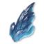
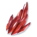
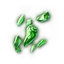
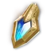

Сбор и крафт
Какую профессию выбрать, как быстрее её прокачать и как получить золотые болванки для крафтового оружия.
По таблице прогрессии TitanTheF (опыт Тайваня) — время и количество на глобалке могут отличаться. TitanTheF
Выбери профессию
- Сбор на глобалке доступен с 1 уровня. Сначала реши, что будешь собирать и крафтить первым.
- Пример для Лучника: Ремесло (Handicrafting) делает и луки с посохами, и бижутерию — очевидный выбор. Бери профессию, которая крафтит твоё основное оружие.
- И у сбора, и у крафта две ступени — Novice → Professional, по 50 уровней.
Качайся на руде и одилии
- Проще всего качать и сбор, и крафт через руду. Начинай с

Самородок сапфира в высокоуровневой локации: 40–60 жил — и у тебя 50 уровень. - Потом возвращайся в главный город к НПС и бери зелёное задание: собрать маленький идеальный рубин. Копай

Самородок рубина, пока не выпадет — обычно 2–3 жилы, есть в провале у города. - Для крафта нужна

Эфир: она собирается в воздухе, во всех локациях. Идеальна уединённая локация, где она спавнится вдоль обрыва, — пользуйся воздушными потоками, чтобы экономить выносливость крыльев. - В городе: перекрафти все сапфиры, потом крафти кольца. На 50 уровне возьми у НПС в городе следующее зелёное задание — скрафтить квестовый предмет из начальных ресурсов. За эти задания ещё дают стартовые рамки в Пантеон.
- Время: около 40 минут до 50 Novice (на Тайване, с учётом ботов); одилия — больше часа. Не хватает белой одилии — разбери зелёную в Substance Morph. Из одилии также крафтится

Эфирная энергия.
Древесина, луки и золотые болванки
- Древесина Иггдрасиля — лучше всего проходная локация, по пути можно фармить питомцев. Наберись терпения: там много игроков, а ресурс ценнее.
- Золотые болванки 60 уровня получаются из синих луков при крите — шанс 25%, чистый рандом. Шары для крафта падают отовсюду: мобы в мире, Бездна, данжи. С кольцами так же.
- На всю прокачку собери около 300 жил сапфира и около 140 деревьев. Выпали золотые ресурсы — не спеши продавать, понадобятся и одилия, и дерево.
- Продавай только критовые луки и кольца (белые и зелёные), некритовые крафти в тир выше. Крафтить начинай, когда соберёшь ресурсы, сбор качай попутно с мобами и не забывай вкладку навыков сбора — например, перекинь очки на одилию перед её сбором.
Докупить или сморфить
- Каждый ресурс для золотого оружия или кольца можно докупить на рынке, а Substance Morph превращает Эфир в любой ресурс. Не торопись: сначала проверь цены — обычно выгоднее продать одилию и купить два ресурса за одну, но бывало и наоборот.
- Где что растёт: карта ресурсов aion2t.com.